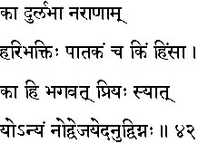
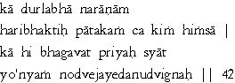

|

|
Verse 42 - Meaning:
Q: What (kaa) is the rarest virtue (dur-labhaa) in man (naraanaam) ?
A: Love of God. (hari-bhaktih)
Q:What (kim) is sinful (paatakam) ?
A: Oppression of others (including tiny creatures). (himsa)
Q:Who is (ko hi) dear (priyah-syaat) to the Lord ? (bhagavat)
A: That one (yo) who does not get angry (anyam-n-odvejayed), nor causes others to get angry. (anudvignah)
|